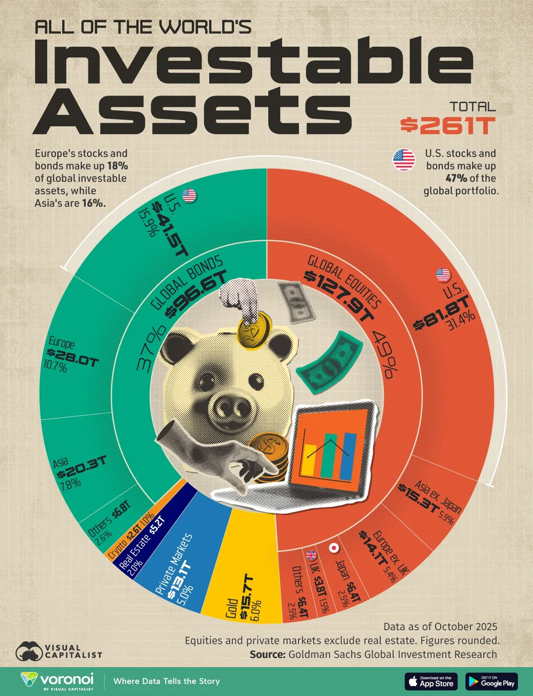

¿Por qué Colombia debe empezar a construir YA su reserva estratégica de activos digitales — y cómo puede hacerlo sin incrementar el gasto público ni crear nuevos impuestos?
Los bienes de extinción de dominio hoy cuestan más de lo que producen. Proponemos estudiar su transformación en una reserva estratégica de activos digitales — productiva y verificable mediante blockchain.
- Por qué una reserva de activos digitales es estratégica para la Nación.
- Cómo construirla sin aumentar el gasto público ni crear nuevos impuestos.
- Por qué las potencias del mundo ya están acumulando estos activos — y qué buscan con sus reservas.
- Cómo ponerlos a trabajar y generar ingresos para el Estado.
- Cuál es la proyección esperada al cierre del mandato 2026–2030.
- Y qué se propone hoy para tomar una decisión rigurosa con los expertos económicos del país — sin seguir pagando el costo de esperar.
Simulación construida con cifras públicas de la SAE, la TRM oficial y el precio de mercado de los activos. Ajusta los supuestos abajo.
Existen activos incautados que le cuestan miles de millones a la Nación: una carga operativa, financiera y jurídica que los hace ineficientes. ¿Cómo los convertimos en activos productivos, verificables, globales e inmutables?
Fuentes: rendición de cuentas SAE 2025 (El Tiempo, mar. 2026) · Auditorías de la Contraloría General (2023; feb. 2026) · Procuraduría General (2022) · Respuesta oficial de la SAE al Congreso (planta de 383 cargos; presupuesto de funcionamiento 2020 de COP 50.469 millones, adicionado) · Acción popular FEDe Colombia (2024) · Investigación de Cambio Colombia (2023). Los valores son aproximados y se usan como supuestos de simulación y contexto ciudadano, no como cifras auditadas por esta página.
¿Cuál es el verdadero potencial de una reserva estratégica? Hagamos un recuento histórico.
Esto ya no es un escenario: es historia. Elige un cuatrienio presidencial y simulamos una compra diaria con el precio real de Bitcoin de cada día de ese mandato — desde USD 100 diarios en los años pioneros hasta los USD 200.000 de esta propuesta. Este es el patrimonio que ese gobierno le habría entregado a Colombia.
Simulación con precios históricos de mercado — no proyecciones. La estrategia DCA no esquivó ninguna crisis: las atravesó todas comprando, y ese es exactamente el punto.
La carrera por la acumulación de los activos del futuro ya arrancó. ¿Por qué las potencias están acumulando — y qué buscan con esta reserva?
No es una tendencia: es doctrina de Estado. Seis gobiernos ya custodian, minan o compran el mismo activo — cada uno con su propia estrategia. Estas son sus cifras.
Fuente y seguimiento en vivo de las tenencias estatales: bitcointreasuries.net/governments — cifras aproximadas, actualizadas por la comunidad con datos on-chain y reportes oficiales.
El Salvador opera su propio explorador de blockchain en un dominio estatal: bitcoin.gob.sv — la Oficina Nacional del Bitcoin publica ahí su reserva, transacción por transacción, sobre nodos del propio Estado. Y las tenencias del Gobierno de Estados Unidos se auditan en tiempo real en arkm.com/explorer/entity/usg — billetera por billetera, entrada por salida. Esa es la diferencia de fondo: en blockchain la transparencia no es una promesa del gobierno de turno, es una propiedad del activo. Ese es el estándar que proponemos para Colombia: no informes anuales — verificación en tiempo real, bloque a bloque.
La Cámara de Diputados de Brasil discute el proyecto de ley PL 4501/2024
(RESBit), que autorizaría comprar hasta 1.000.000 de bitcoins en cinco
años — el 5% de sus reservas internacionales, unos USD 15-18 mil millones. Ya cuenta con ponencia
favorable del relator y está listo para votación en su primera comisión, convirtiendo a Brasil en la
primera economía del G20 en tramitar Bitcoin como activo de reserva soberana por vía legislativa. Y un
detalle que valida esta propuesta punto por punto: el proyecto brasileño
prohíbe vender los criptoactivos incautados y exige custodia
fría, multifirma y divulgación pública del saldo en tiempo real. Si la potencia vecina compra un millón,
cada día que Colombia espera, compra más caro.
Consultar el trámite oficial → Cámara de Diputados de Brasil · PL 4501/2024
Tenencias aproximadas a mediados de 2026: EE. UU. ~200.000–330.000 BTC según la fuente (Arkham / BitcoinTreasuries); El Salvador ~7.650–7.700 BTC (Oficina Nacional del Bitcoin). Brasil aparece con la meta de su proyecto de ley, aún en trámite. "Colombia (simulada)" corresponde al horizonte que configures arriba.
¿Por qué esta gama de activos es la base de las nuevas reservas de valor en la era digital?
Son la base tecnológica del dinero del mañana: activos globales que almacenan valor por adopción, gracias a una emisión limitada que ninguna autoridad puede alterar. Estas son las razones de peso.
El dinero del mañana ya tiene infraestructura
Una red operando 24/7/365 con un uptime del 99,99% desde 2009 — sin un solo banco, sin una sola oficina, sin un solo día festivo. Ningún sistema financiero del planeta iguala ese récord.
El 95% ya fue emitido. Nadie puede crear más
De los 21 millones de bitcoins que existirán, 19,9 ya circulan. En los próximos 100 años solo se emitirá el 5% restante — mientras la demanda institucional apenas despierta. No es escaso: es limitado, y eso es muy distinto.
USD 1.100 millones movidos por USD 0,68
Una sola transacción real de Bitcoin (2020). Esa es la capacidad de esta red: transferir valor a cualquier lugar del mundo en minutos, a costos irrisorios, con seguridad criptográfica y trazabilidad total. Ningún sistema financiero tradicional puede igualarlo.
Estamos donde estaba internet en 1999
Más de 500 millones de personas poseen activos digitales — apenas el ~6% de la población mundial: el mismo nivel de penetración que tenía internet en 1999, justo antes de su expansión masiva. Cada nuevo usuario aumenta el valor de la red para todos los demás.
Millones de agentes autónomos moverán una economía on-chain
Software que administra valor y ejecuta transacciones 24/7, sin intervención humana. Cada operación usa la red y sus activos: un multiplicador de volumen y adopción sin precedente — la demanda estructural que apenas comienza.
USD 1 millón por bitcoin
Proyecciones de ARK Invest, análisis de Fidelity y modelos estadísticos de ley de potencia sitúan escenarios de USD 1 millón entre 2030 y 2040, con base en emisión limitada y adopción — la proyección que esta propuesta invita a la comunidad científica de Colombia a validar.

De los USD 261 billones ($261 T) en activos invertibles del mundo, los activos digitales son apenas el 1% — con la adopción institucional apenas comenzando y una oferta que no puede expandirse. Cada punto porcentual del portafolio global que migre hacia esta clase de activo duplica su tamaño. Ese es el recorrido que tiene por delante — y la razón para posicionarse antes, no después.
Datos: Goldman Sachs Global Investment Research (oct. 2025), visualizados por Visual Capitalist · "All of the World's Investable Assets" — total USD 261 billones ($261 T).
— Larry Fink, CEO de BlackRock, el mayor gestor de activos del mundo (USD 12+ billones administrados). Escúchalo en sus palabras →
Cada era tuvo su activo de oportunidad — su momento para comprar y acumular: la tierra, el oro, el petróleo. Esta es la era de los activos digitales, y ellos serán el petróleo de esta era. Colombia todavía puede llegar temprano.
¿Qué pasa si Colombia compra USD 200.000 diarios durante el próximo mandato?
USD 200.000 diarios ≈ la mitad del recaudo de los remates de la SAE que le corresponde a la Nación para su libre destinación (2025: COP 1,14 billones totales). No es plata nueva — es redirigir la que ya existe. 48 meses: un cuatrienio exacto (2026 → 2030), con su piso, su halving (abril 2028) y su techo. Presiona ▶ y mira correr el mandato.
Escenario de ciclo — hipótesis de trabajo, no pronóstico. Trayectoria modelada sobre la anatomía histórica de los ciclos de Bitcoin: del precio actual al piso hacia octubre 2026 (~12 meses después del techo anterior), recuperación, halving en abril 2028 (línea verde), techo del ciclo hacia finales de 2029 (~18 meses post-halving, como en todos los ciclos anteriores) y corrección parcial al cierre del mandato en 2030. Referencia visual del modelo de bandas y ciclos: Bitcoin Rainbow Chart (blockchaincenter.net) — hoy el precio está en la banda inferior, la zona histórica de acumulación. Nadie conoce el futuro del precio; lo que este módulo demuestra es que la estrategia DCA no necesita adivinar: compra la misma cantidad todos los días, acumula más cuando está barato, y el promedio hace el trabajo.
Además de acumular valor, esta reserva puede generar ingresos regulares y transparentes para la Nación (DeFi).
La idea, en una frase: la reserva es como una finca productiva del Estado. El 70% o más se guarda bajo llave (custodia fría, nadie la toca). Hasta un 30% se "pone en arriendo" en los mercados de finanzas descentralizadas — prestando liquidez que los mercados pagan por usar, igual que hacen los fondos de inversión más grandes del mundo con su tesorería. Ese arriendo llega todos los meses, queda registrado en público, y se gira automáticamente a planes sociales. La diferencia con todo lo que existe: el Estado hoy solo sabe recaudar cobrándole impuestos a la gente; aquí recauda porque su propio patrimonio trabaja.
autorange.xyz → Referencia para demostración en vivo ante la mesa técnica.
Agentes como este se multiplicarán por millones y serán la base de la interacción masiva de estas redes: cada transacción paga por usar la red — elevando el valor de sus activos por uso y por quema. Más agentes → más uso → activos más valiosos.
Diseño institucional: custodia multifirma repartida — 2 de 3 responsables — y una política de Estado que trascienda gobiernos.
Beneficia a todos los colombianos — a los que votaron por el gobierno y a los que no. Ese es el punto.
¿Por dónde se empieza — sin ley, sin presupuesto, mañana mismo?
Esta propuesta no exige empezar por el Congreso. Puede nacer mañana con una decisión administrativa y crecer por etapas — cada paso genera evidencia para el siguiente.
Dejar de subastar la cripto ya incautada
La SAE ya recibe criptoactivos incautados. Una directiva interna — espejo de la orden ejecutiva de EE. UU. y del proyecto brasileño — ordena custodiarlos en billetera fría multifirma pública en vez de rematarlos. La reserva nace sin costo fiscal ni trámite legislativo, y el país gana su primer saldo verificable on-chain.
Un programa de compra pequeño y auditable
Un piloto de 12 meses con un monto acotado del recaudo de remates, publicado a diario. El objetivo no es el tamaño: es demostrar el mecanismo — remate ágil → compra DCA → billetera pública → informe ciudadano. La evidencia del piloto es el mejor argumento ante el Congreso.
Modificar la destinación del FRISCO (Ley 1708 de 2014)
Los recursos de los bienes con extinción de dominio tienen destinación fijada por ley. Redirigir un porcentaje a la reserva exige un proyecto de ley que reforme el Código de Extinción de Dominio — o un artículo en el Plan Nacional de Desarrollo del gobierno entrante, la ley ómnibus que se tramita en los primeros meses de cada cuatrienio y que es la ventana legislativa ideal.
Fondo soberano, no reserva internacional
Las reservas internacionales las administra el Banco de la República con criterios constitucionales de seguridad y liquidez — pelear esa batalla es innecesario. La vía inteligente: un fondo soberano independiente (como los que ya existen para regalías y pensiones territoriales), con las llaves multifirma repartidas entre entidades de control, el candado de 10 años y la fórmula de dividendos sociales escritos en su ley de creación.
¿Qué busco hoy? Llevarlos a la acción inmediata: explorar esta estrategia — y desafiar a nuestra comunidad científica y matemática a evaluar la tendencia del algoritmo y sus posibles desenlaces.
Dos decisiones de costo cero — y un sentido de urgencia: la retrospectiva ya mostró lo que cuesta cada cuatrienio de espera. Empezar a trabajar hoy en esta dirección no compromete un solo peso; seguir esperando, sí.
Una mesa técnica de exploración
Conformar de inmediato una mesa técnica que maneje todos los pormenores de la conformación de la reserva: lo financiero, lo jurídico, lo legislativo y lo operativo — con las cifras de la SAE, la arquitectura de custodia y la experiencia internacional sobre la mesa. Sin compromiso de adopción: solo el rigor de estudiarla ya. La Fase 1 (custodiar la cripto incautada en vez de subastarla) puede ejecutarse con una directiva administrativa.
Que Colombia le audite el algoritmo a Bitcoin
Invitar a la comunidad matemática y científica de Colombia a auditar el algoritmo de Bitcoin y validar — con los antecedentes históricos, la data on-chain y el contexto geopolítico — si la proyección de USD 1 millón para 2030–2040 es alcanzable. Si encuentran la falla, Colombia se ahorra el error y es noticia mundial. Si no la encuentran, el Estado obtiene gratis la validación científica de su reserva. No hay escenario donde el país pierda.
Soy Andrés Guzmán — consultor profesional en blockchain, speaker, estratega e inversor en activos digitales con más de 10 años de experiencia comprobada: creador de contenido educativo, con más de 1.000 alumnos formados y más de 100 inversionistas acompañados, con estudios en academias de México, Argentina y España. Viví un año en Emiratos Árabes Unidos, donde trabajé en proyectos del ecosistema — incluida una pasantía en Cypher Capital, fondo de inversión cripto de EAU — experiencia que pongo al servicio del país para liderar la conformación técnica de esta reserva.